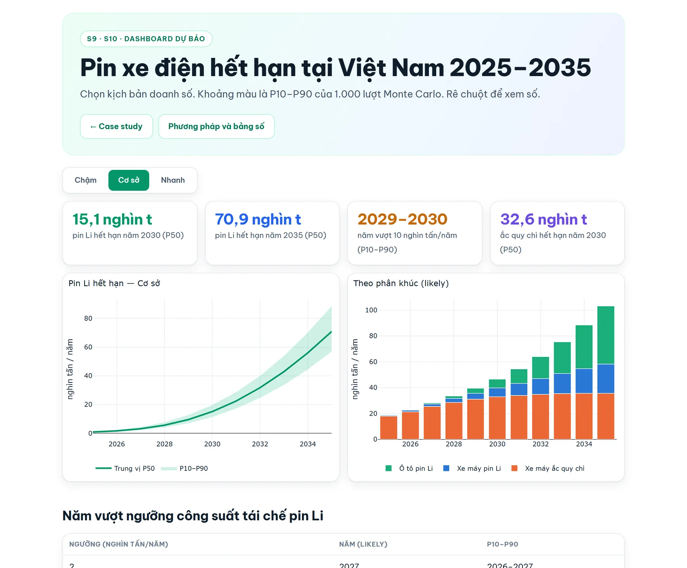
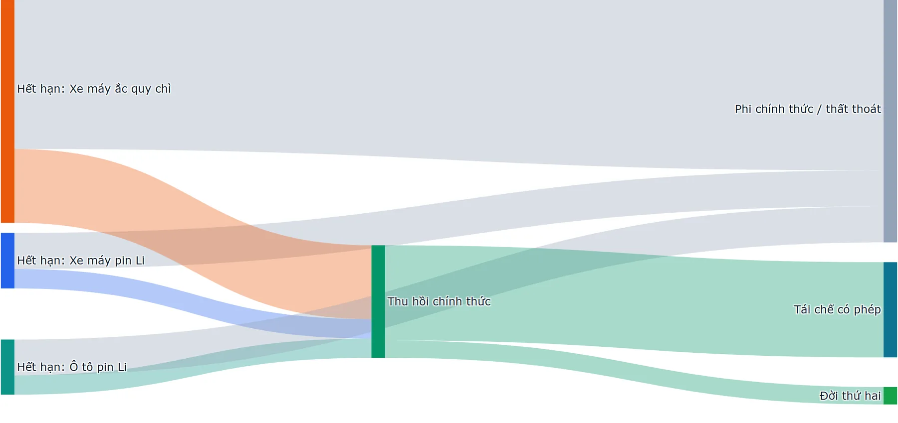
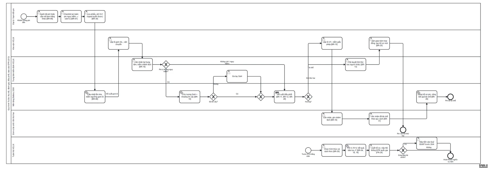
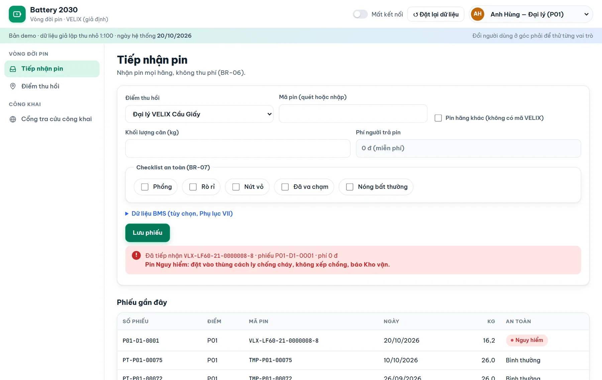
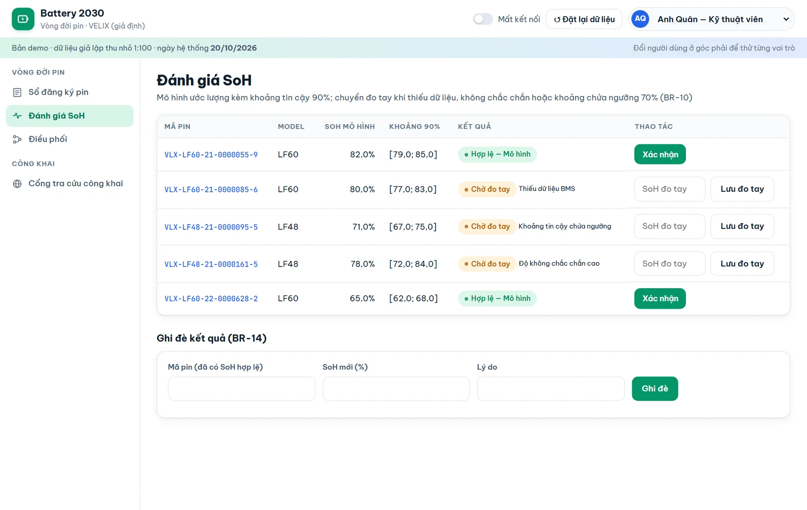
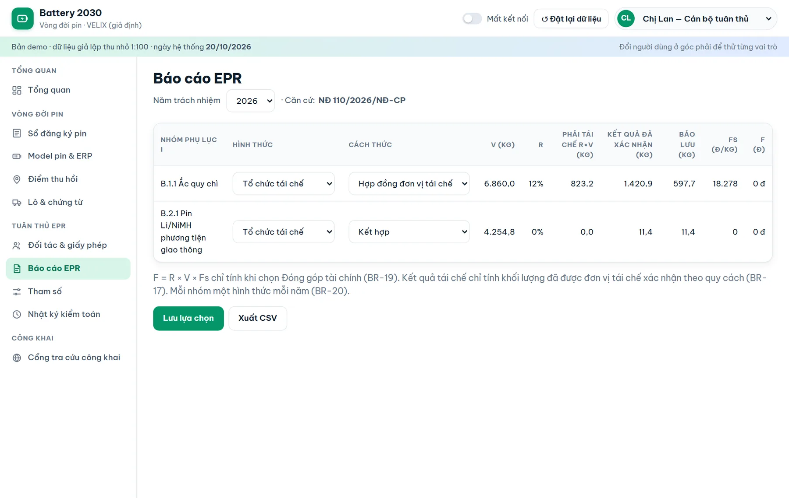
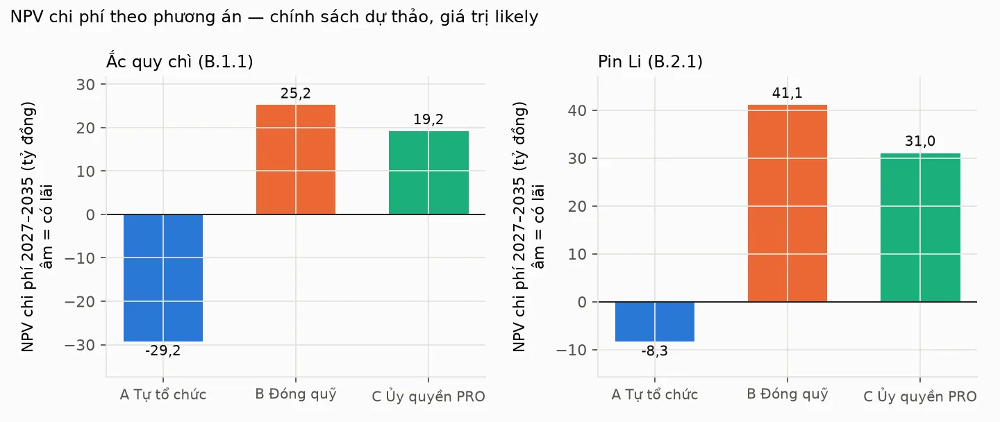

A wave is coming, and it cannot be measured
Electric motorbikes sold in recent years will retire their batteries in volume around 2029–2030. Vietnam's Extended Producer Responsibility (EPR) rules make manufacturers responsible for recycling, and the rates are scheduled for revision from 2029.
Today no one can answer the basic questions: how many batteries reach end of life, where they go, and how many could have a second life.
Business objectives
- Meet EPR filing obligations on time, starting with the April 2027 deadline.
- Know where each battery goes, so second life and recycling can be planned.
- Choose the cheapest compliant option for each battery type.
Regulation first, then the forecast
I extracted obligations verbatim from Vietnam's EPR decree and environmental law, and from EU Regulation 2023/1542 as a reference standard, then compared them across 18 topics.
| Level | Topics | Meaning for the design |
|---|---|---|
| Critical gap | 6 | Vietnam has no equivalent rule, so collection and second life cannot be measured. The platform sets the requirement voluntarily, to EU standard. |
| Partial | 7 | A rule exists but is weak or vague. Meet Vietnam's rule and extend data fields to EU level. |
| Minor | 5 | Wording differences or out of scope. Recorded, no separate requirement. |
- Lithium EV batteries currently carry a 0% recycling rate, so the fund contribution is also zero; a draft proposes 8% from 2029 and 15% from 2032.
- Vietnam measures recycled mass; the EU measures collection rate. No collection target, no second-life rule and no battery ID — exactly why the platform needs to exist.
Forecast: a range, not a single number
A cohort × Weibull model turns yearly sales into end-of-life volumes, with 1,000 Monte Carlo runs per scenario. About 45% of batteries are technically fit for a second life, but only ≈16% reach it in 2030 because most flow through undocumented channels. Second life is blocked by collection, not by technology.


Eight modules, every rule traceable to a law or a need
The SRS (ISO/IEC/IEEE 29148) defines 33 functional requirements, 11 non-functional requirements, 30 business rules in EARS form and 8 AI requirements. The MVP covers 25 user stories in five sprints.
Design choices driven by the gap analysis
- Every battery gets a unique ID from registration, with a lifecycle that matches the EU battery-passport states.
- A routing decision to second life is valid only with a state-of-health record attached.
- Rates and fees are stored as effective-dated parameters, because the 0% lithium rate is due for revision.
- Both measures are reported: Vietnam's recycled mass (mandatory) and the EU collection rate (voluntary KPI).
AI with guardrails
A model estimates battery state of health from public NASA battery data. It is accurate on average — mean absolute error 2.53 points, 88.5% interval coverage — but a business rule still sends 94.6% of cases to manual measurement because the intervals are too wide. The requirements therefore say when a human must take over, and the MVP runs the model in parallel until it meets its acceptance criteria on real pack data.
One record per battery, from sale to recycling
Battery register, collection, state-of-health assessment, routing to second life or recycling, partners, EPR reporting, battery passport and administration — with permissions for eight roles.




Deliverables
- Discovery — charter, BACCM, PESTLE/SWOT, stakeholders, personas
- As-is — BPMN, elicitation, root cause, context diagram
- Compliance matrix — Vietnam × EU, verbatim extracts
- Forecast — data, model, material flow, critique
- Design — vision & scope, BPMN to-be, SRS, ERD, API spec, backlog
- AI — model card and AI requirements
- Prototype — 14 screens and user flows
- Test — 73 test cases, RTM, UAT
Tested end to end, then compared option by option
Business case Projected
Three options for 2027–2035, analysed separately for lead-acid and lithium: A — run take-back in-house, B — pay into the national fund, C — delegate to a producer responsibility organisation. Share of runs in which each option is cheapest:

| Battery group · policy | A wins | B wins | C wins |
|---|---|---|---|
| Lead-acid · all scenarios | 100% | 0% | 0% |
| Lithium · current rule (0%) | 60% | 40% | 0% |
| Lithium · draft (8% → 15%) | 97% | 0% | 3% |
| Lithium · high (10% → 20%) | 99% | 0% | 1% |
For lithium, the NPV range is wide and changes sign, so the answer depends on the measured second-life price. That is why the recommendation sets a date to decide rather than deciding now.
What this case shows
- A 0% obligation is still a requirement. It is scheduled to change, so the design stores it as a parameter rather than hard-coding today's value.
- Forecasts belong in ranges. Battery lifetime moves the answer more than sales do; showing P10–P90 makes that visible to decision makers.
- Specify how AI is allowed to fail. Acceptance requirements turned "AI estimates battery health" into a testable rule about when a person must take over.